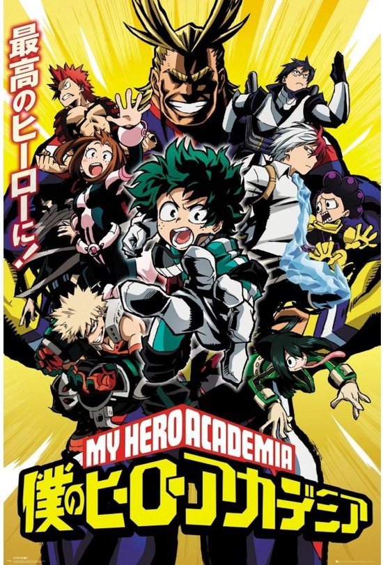
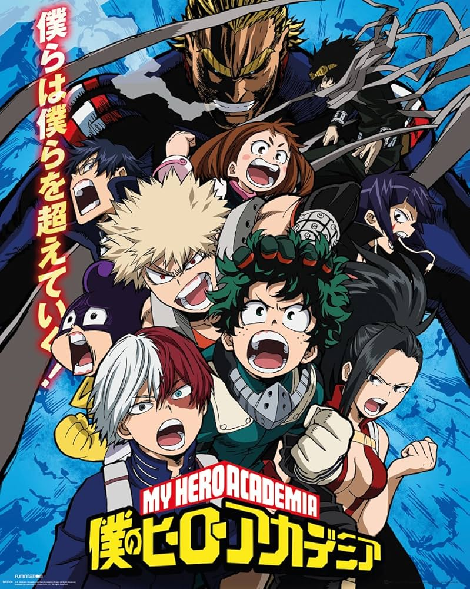
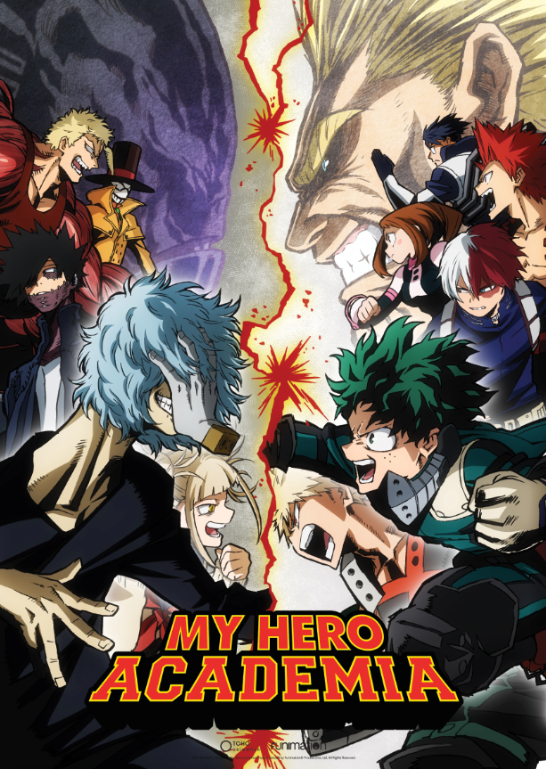
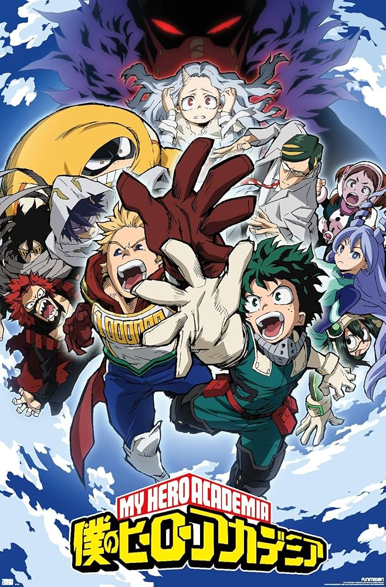
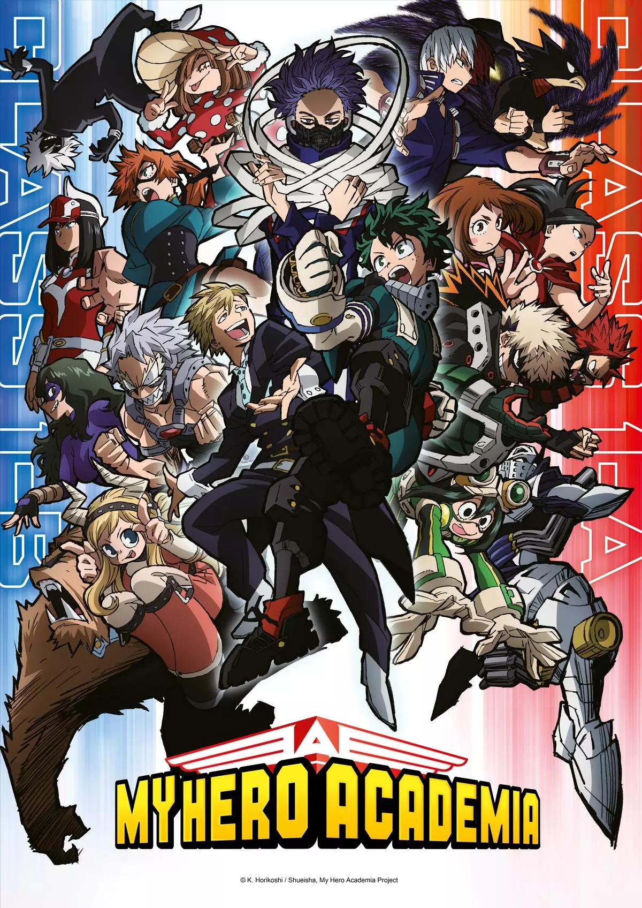
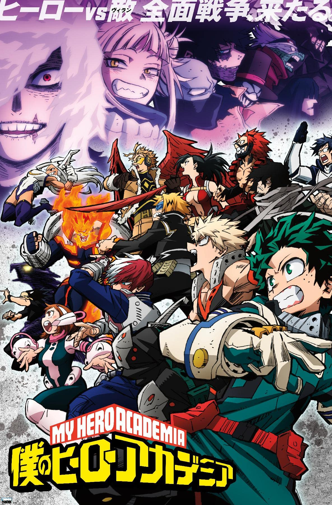
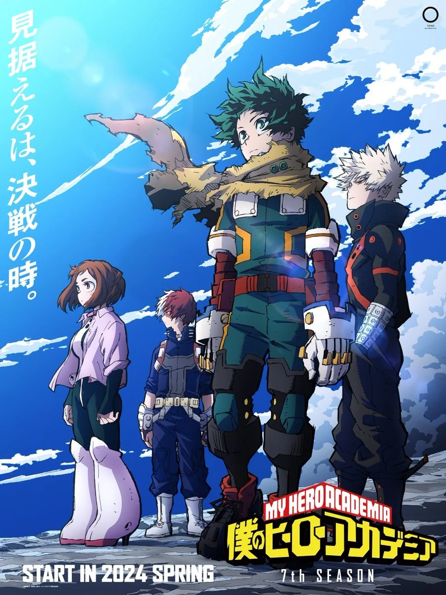
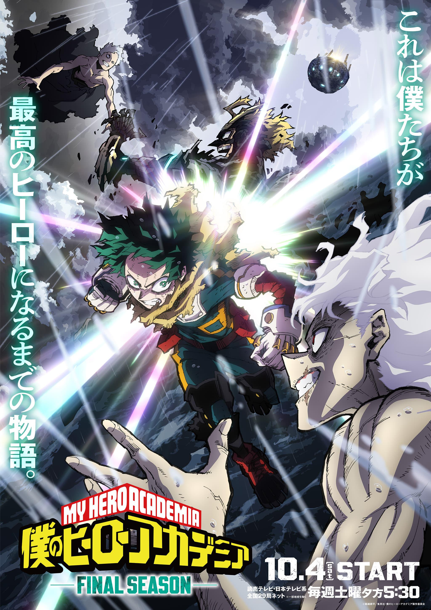

2016
Seisoen 1

In het eerste seizoen van My Hero Academia krijgt de krachtloze Izuku Midoriya de "One For All"-gave van zijn idool All Might en begint hij aan zijn zware opleiding op de prestigieuze U.A. High School. Terwijl hij zijn nieuwe krachten leert beheersen, wordt de klas tijdens een training overvallen door een gevaarlijke groep schurken die de vrede proberen te verstoren.
2017
Seisoen 2

In het tweede seizoen staat het spectaculaire U.A. Sports Festival centraal, waar Izuku en zijn klasgenoten hun krachten aan de hele wereld tonen in een intense onderlinge strijd. Daarnaast maken we kennis met de angstaanjagende "Hero Killer" Stain, die de jonge helden dwingt om voor het eerst echt hun leven te riskeren buiten de schoolmuren.
2018
Film 1 Two heroes

In de eerste film, My Hero Academia: Two Heroes, bezoeken Deku en All Might het technologisch geavanceerde drijvende eiland I-Island om een oude vriend en wetenschapper, David Shield, te ontmoeten. De vakantie verandert echter in een gevaarlijke reddingsmissie wanneer schurken onder leiding van Wolfram het beveiligingssysteem hacken en het hele eiland gegijzeld houden.
2018
Seisoen 3

In het derde seizoen van My Hero Academia wordt een trainingskamp van de studenten bruut verstoord door de League of Villains, wat leidt tot de ontvoering van Bakugo. Dit mondt uit in de legendarische en emotionele eindstrijd tussen All Might en All For One, waarna de studenten zich moeten bewijzen tijdens het examen voor hun voorlopige heldenlicentie.
2019 - 2020
Seisoen 4

In het vierde seizoen loopt Izuku stage bij Sir Nighteye en werkt hij samen met de "Big Three" om het jonge meisje Eri te redden uit de greep van de meedogenloze maffialeider Overhaul. Na deze heftige strijd proberen de studenten de sfeer op school weer te vrolijken door een groots Schoolfestival te organiseren, ondanks de dreiging van de gentleman-schurk Gentle Criminal.
2019
Film 2 Heroes Rising

In de tweede film, My Hero Academia: Heroes Rising, gaan de leerlingen van klas 1-A naar het rustige Nabu Island om daar zelfstandig een heldenbureau te runnen zonder toezicht van pro-helden. Hun rust wordt echter bruut verstoord door de komst van de krachtige schurk Nine, die het gemunt heeft op de gave van een jongetje op het eiland, wat leidt tot een van de meest spectaculaire samenwerkingen tussen Deku en Bakugo ooit.
2021
Seisoen 5

In het vijfde seizoen nemen de klassen 1-A en 1-B het tegen elkaar op in een reeks spannende Joint Training-gevechten, waarbij Deku ontdekt dat de One For All-kracht nog verborgen gaven bevat. Tegelijkertijd verschuift de focus naar de schurken in de "My Villain Academia"-boog, waarin Tomura Shigaraki de confrontatie aangaat met het Meta Liberation Army om zijn macht definitief te vestigen.
2021
Film 3 World Heroes' Mission

In de derde film, World Heroes' Mission, wordt de wereld bedreigd door een sekte genaamd Humarise die alle gaven wil uitroeien met giftige gasbommen. Deku, Bakugo en Todoroki reizen af naar het buitenland, waar Deku onterecht wordt beschuldigd van een massamoord en samen met de lokale koerier Rody Soul moet vluchten terwijl ze de wereld proberen te redden.
2022 - 2023
Seisoen 6

In het zesde seizoen breekt er een allesverwoestende oorlog uit tussen de professionele helden en het Paranormal Liberation Front, wat leidt tot enorme verliezen en een diepe vertrouwensbreuk in de maatschappij. In de nasleep hiervan verlaat een getergde Deku de U.A. High School om als een eenzame "Dark Hero" op schurken te jagen en zijn dierbaren te beschermen.
2024
Film 4 You're Next

In de vierde film, My Hero Academia: You're Next, nemen Deku en zijn vrienden het op tegen Dark Might, een schurk die sprekend op All Might lijkt en zijn erfenis probeert te besmeuren. Terwijl de maatschappij na de oorlog nog wankelt, moeten de jonge helden voorkomen dat deze machtige imitator een enorme zwevende vesting gebruikt om de wereld naar zijn hand te zetten.
2024
Seisoen 7

In het zevende seizoen barst de allesbeslissende oorlog los, waarbij Amerika’s nummer één held, Star and Stripe, naar Japan komt voor een spectaculair duel tegen Shigaraki. Na de schokkende onthulling dat Yuga Aoyama de verrader binnen U.A. is, splitsen de helden de schurken op voor een reeks intense eindgevechten, waaronder de emotionele confrontatie binnen de familie Todoroki en de bloedstollende strijd van All Might tegen All For One.
2025
Seisoen 8
